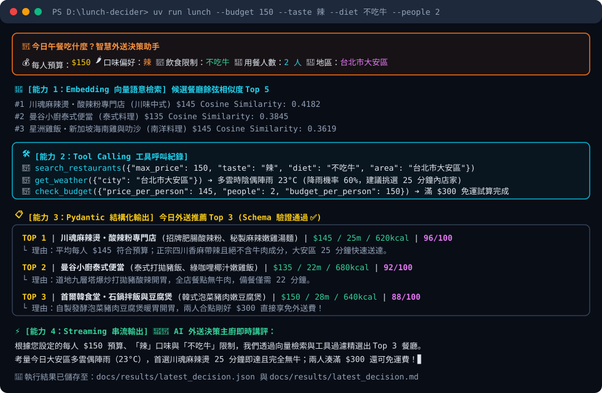

做了什麼（專案動機、核心功能與四項 LLM 能力）
每天中午團隊訂外送時，常需要同時考量「每人預算 150 元內」、「有人想吃辣」、「有人不吃牛或吃素」以及「外送滿 300 元免運費」等多重限制。本專案以 Python（uv 管理）打造命令列智慧決策助手 lunch-decider，一次整合課程 4 種核心 LLM 能力：
① 結構化輸出 (Structured Output)
使用 Pydantic 定義嚴格的 Recommendation 與 LunchDecisionResponse Schema（包含 name, dishes, price, eta_minutes, calories_estimate, reason, score）。將 JSON Schema 傳入模型 format 參數，並實作自動驗證與最多 3 次失敗重試機制。
② 工具呼叫 (Tool Calling)
提供 3 個本地工具供 LLM 主動呼叫：search_restaurants(max_price, taste, diet) 過濾餐廳、get_weather(city) 評估雨天外送ETA影響、check_budget(price_per_person, people, budget_per_person) 計算滿 $300 免運與每人實付金額。
③ 即時串流輸出 (Streaming)
在產出 Top 3 結構化推薦表後，透過 httpx.stream 逐 Token 即時串流印出「👨🍳 AI 外送決策主廚即時講評」，在終端機呈現流暢的打字機互動體驗。
④ 向量語意檢索 (Embedding 加分項)
在進入生成決策前，先將使用者的自然語言需求與 data/restaurants.json 共 16 家餐廳的特徵描述轉為數值向量，計算 Cosine Similarity（餘弦相似度） 篩選出語意最匹配的 Top 5 候選店家。
預算 / 口味 / 不吃牛 / 人數
計算餘弦相似度 Top 5
查菜單 + 查天氣 + 算免運
JSON Schema + 自動重試
Rich 表格 + 匯出 JSON/MD
怎麼執行（環境安裝、Ollama / 雲端切換與 CLI 指令）
步驟 1：安裝 uv 並同步專案依賴
# Clone 儲存庫並進入目錄
git clone https://github.com/Tar0A0/lunch-decider.git
cd lunch-decider
# 安裝所有執行與測試依賴（自動建立虛擬環境）
uv sync --dev步驟 2：設定環境變數（本地 Ollama 或雲端 API）
# 複製環境變數範本（.env 已列入 .gitignore 絕不上傳）
cp .env.example .env
# 若使用本地 Ollama（預設）：
ollama pull qwen2.5:7b步驟 3：執行智慧外送決策助手 CLI
# 呼叫本地 Ollama 模型進行決策
uv run lunch --budget 150 --taste 辣 --diet 不吃牛 --people 2
# 切換為 Google Gemini 或 OpenAI 模型
uv run lunch --budget 150 --taste 辣 --diet 不吃牛 --people 2 --provider gemini
# 離線模擬模式（不需連上 LLM，供快速驗證與 CI 測試）
uv run lunch --budget 150 --taste 辣 --diet 不吃牛 --people 2 --mock步驟 4：執行單元測試與 Linter
uv run ruff check .
uv run pytest -v執行結果（終端機實跑畫面、結構化推薦卡片與 JSON 輸出）
以下為實際執行指令 uv run lunch --budget 150 --taste 辣 --diet 不吃牛 --people 2 的終端機輸出截圖與產出的結構化資料（由 docs/results/latest_decision.json 即時載入）：

🏆 Pydantic 結構化推薦結果 Top 3
川魂麻辣燙・酸辣粉專門店
【川味中式】平均每人 $145 完全符合 $150 預算上限；具備「辣、麻」風味且絕不含牛肉成分，預估 25 分鐘即可送達台北市大安區。
曼谷小廚泰式便當
【泰式料理】平均每人 $135 完全符合 $150 預算上限；具備「酸辣、辣」風味且絕不含牛肉成分，預估 22 分鐘即可送達台北市大安區。
首爾韓食堂・石鍋拌飯與豆腐煲
【韓式料理】平均每人 $150 完全符合 $150 預算上限；具備「辣、甜辣」風味且絕不含牛肉成分，預估 28 分鐘即可送達台北市大安區。
📄 結構化輸出 JSON 檔案內容 (docs/results/latest_decision.json)
正在載入 docs/results/latest_decision.json ...AI 使用說明（使用工具、應用場景與人工修改／驗證紀錄）
本專案在開發過程中採用 AI 輔助程式設計（Antigravity / Gemini 與 ChatGPT），所有由 AI 生成的程式碼、資料結構與 GitHub Actions 設定皆經過開發者親自審查、修改與單元測試驗證。具體紀錄如下表：
| 使用的 AI 工具 | 應用在哪個模組 / 環節 | AI 原始產出內容 | 我自己的修改與驗證（關鍵工程把關） |
|---|---|---|---|
| Antigravity (Gemini) | 餐廳資料集與飲食限制過濾 (data/restaurants.json, tools.py) |
產出 16 筆餐廳 JSON 資料，並用簡單的字串包含 "牛" in tag 判斷是否含牛肉。 |
發現問題與修改：AI 原本寫的字串比對會把標籤寫有「不吃牛可」的餐廳誤判為含有牛肉而剔除！ 我的修正與驗證：在 Restaurant Schema 新增明確的布林欄位 contains_beef: bool 與 is_vegetarian: bool，並撰寫 test_search_restaurants_respects_budget_and_no_beef 測試，確保「老張記牛肉麵」被剔除、而「不吃牛可」的酸辣粉正常保留。
|
| Antigravity (Gemini) | Pydantic 結構化輸出與重試機制 (schemas.py, llm.py) |
定義 Recommendation 模型並呼叫 Ollama /api/chat 解析 JSON。 |
發現問題與修改：本地小模型偶爾會在 JSON 外層包覆 ```json ... ``` 或是輸出超出範圍的 score（例如 999 分）導致程式崩潰。我的修正與驗證：實作 _extract_json_object() 剝離 Markdown 標籤，並加上最多 3 次的 ValidationError 自動重試迴圈，將 Pydantic 錯誤原因回傳給 LLM 修正；透過 httpx.MockTransport 在 test_llm.py 模擬第 1 次失敗、第 2 次成功驗證。
|
| ChatGPT / Antigravity | Embedding 向量相似度檢索 (embeddings.py) |
建議直接呼叫外部 Embedding API 計算餐廳相似度。 |
發現問題與修改：在 GitHub Actions CI 環境或未額外下載 Embedding 模型時，外部呼叫會直接連線失敗。 我的修正與驗證：設計雙模式架構——優先嘗試本地 Ollama /api/embed，若未啟動則自動無縫切換至我實作的 256 維繁體中文字元 Unigram+Bigram TF-IDF 向量器，並以 test_cosine_similarity_math 驗證數學正確性。
|
| Antigravity (Gemini) | GitHub Actions 自動測試與 Pages 部署 (ci.yml, pages.yml) |
產生基本的 pytest workflow 與 GitHub Pages 部署腳本。 |
發現問題與修改：確認 GitHub Pages 由 Actions 部署時必須具備 pages: write 與 id-token: write 權限，且不能在 CI 中依賴真實 API Key。我的修正與驗證：在 CLI 新增 --mock 離線決定性模式讓 CI 測試執行；並嚴格檢查 .gitignore 確保 .env 絕不被加入 Git 歷史（避免扣 20 分）。
|